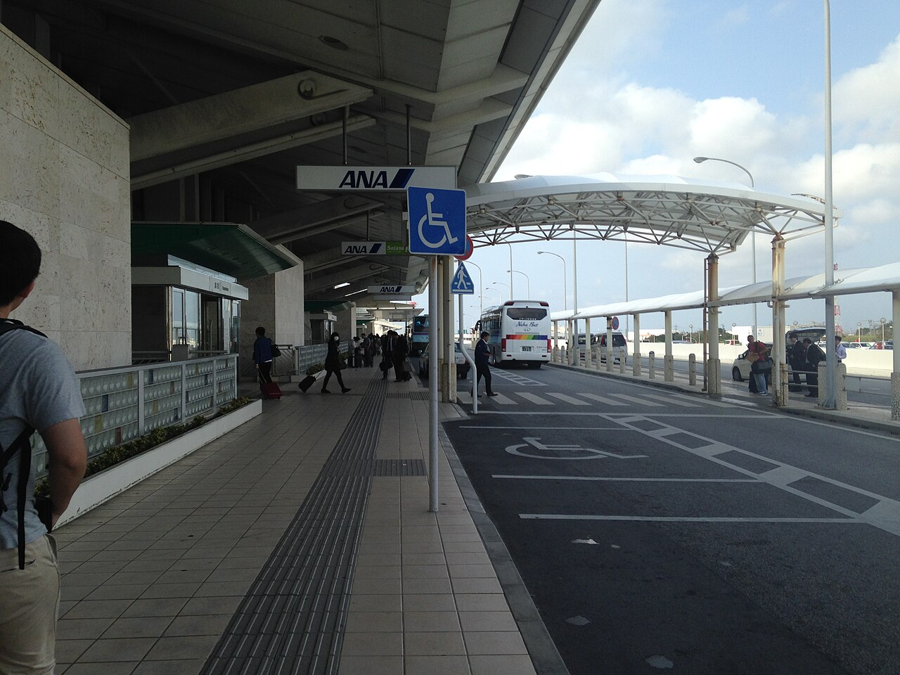
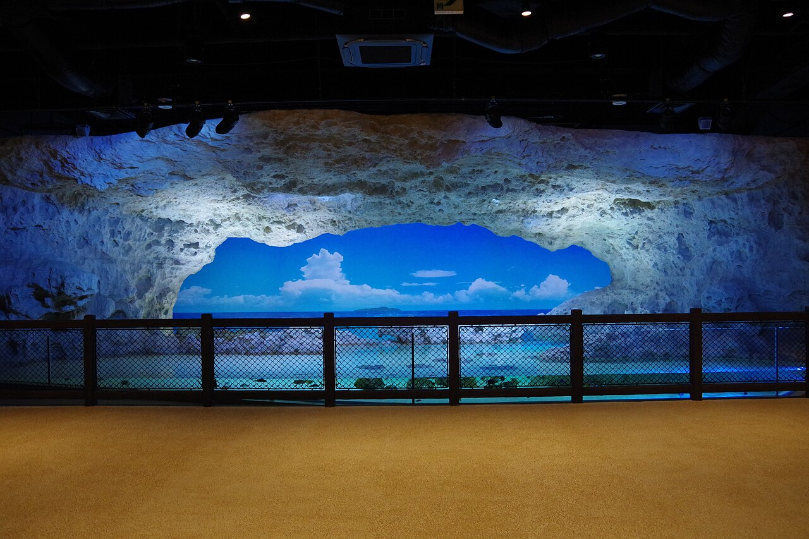
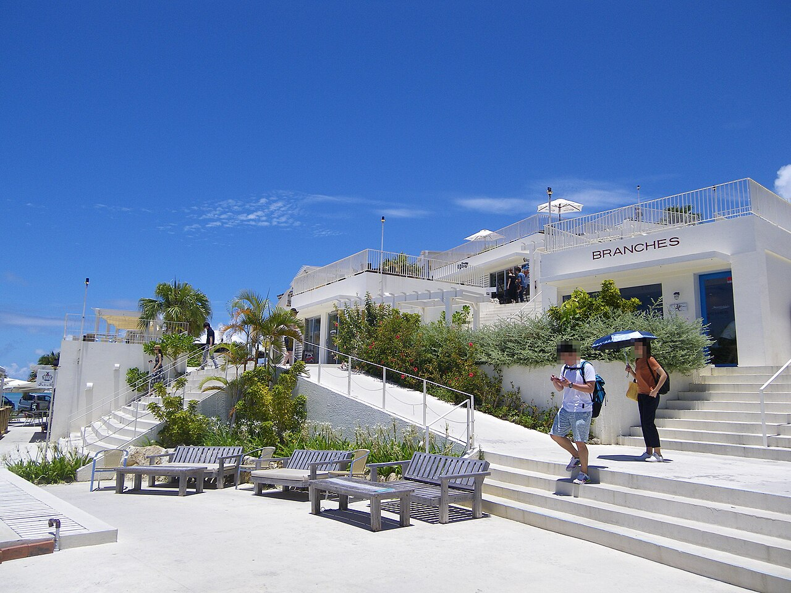
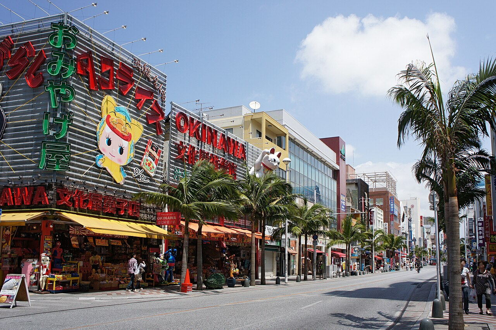
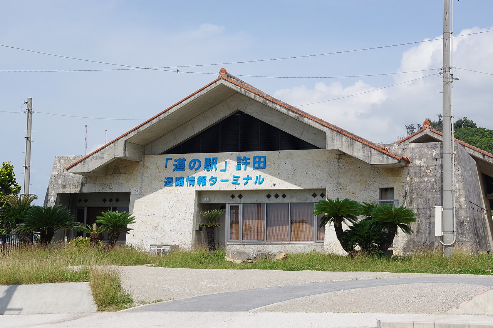
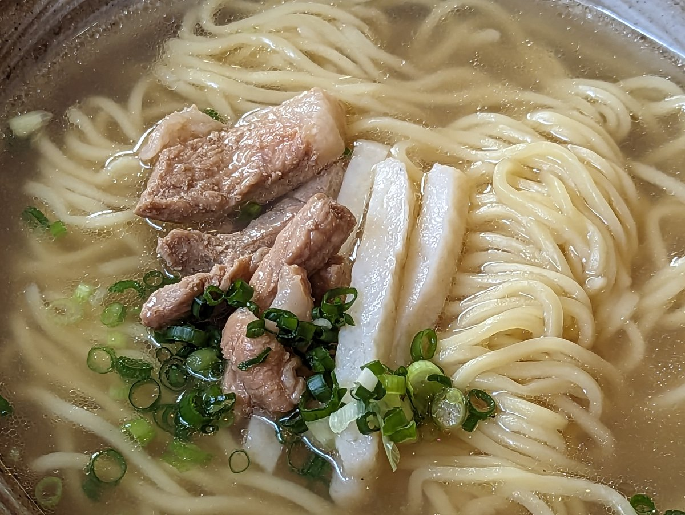
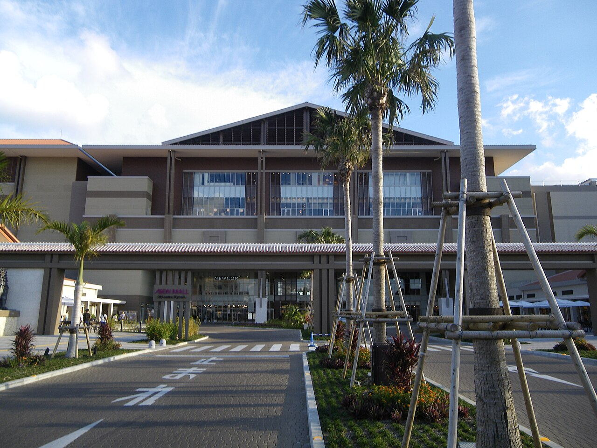
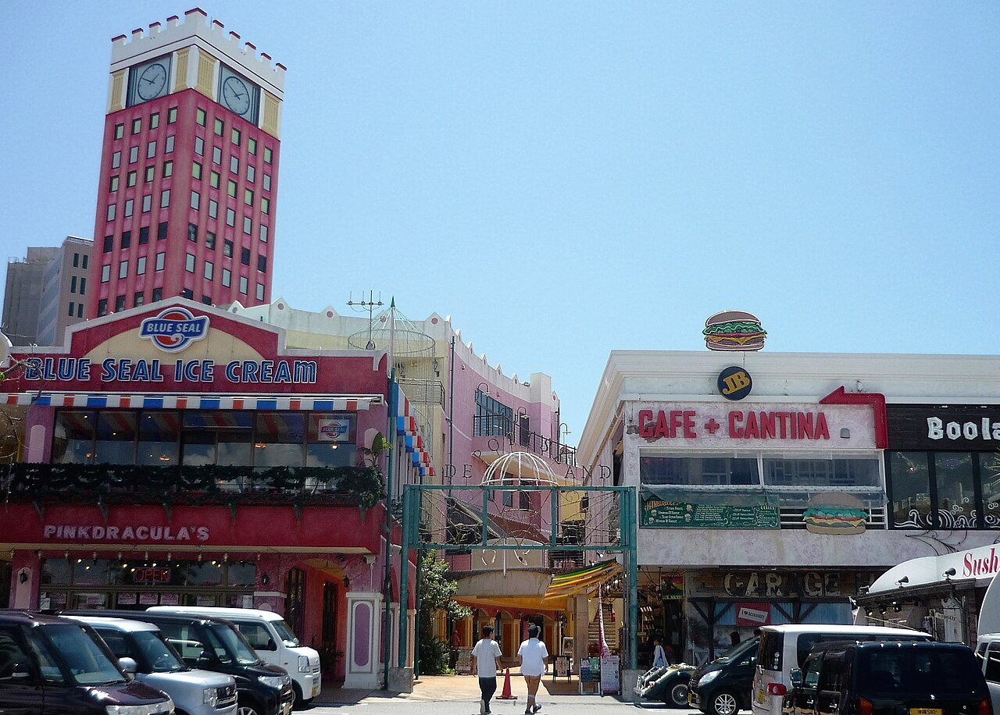
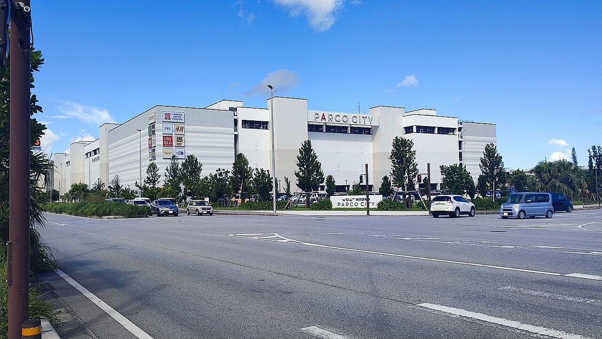

4 天行程總覽（12 個必去點全收）
| 日期 | 路線 | 交通 | 首選餐廳 | 住宿 |
|---|---|---|---|---|
| Day 1 11/16（一） |
那霸機場 ➔ 沖繩世界（南城）➔ iias 豐崎・DMM 水族館 ➔ 瀨長島 ➔ 國際通 ➔ 凱悅 | 🚕 計程車 🚌 TK02 ウミカジライナー |
健食バイキング ちゅら島（園內自助餐） 氾濫バーガー チムフガス |
那霸凱悅酒店（Hyatt Regency Naha） |
| Day 2 11/17（二） |
凱悅 ➔ 沖繩自動車道 ➔ 道之驛許田 ➔ 美麗海水族館 ➔ 岸本食堂 ➔ 古宇利島 ➔ 萬座毛 ➔ 海麗客蘭尼 | 🚐 包車（附司機） | きしもと食堂 本店（岸本食堂） KOURI SHRIMP ハレクラニ沖縄「KINGDOM」（飯店內牛排館） |
沖繩海麗客蘭尼（Halekulani Okinawa） |
| Day 3 11/18（三） |
海麗客蘭尼 ➔ AEON Rycom ➔ 美濱美國村 ➔ PARCO CITY ➔ 凱悅 | 🚐 包車（附司機） | HAN'S 美浜店 鉄板焼ステーキレストラン 碧 国際通り松尾店 |
那霸凱悅酒店（Hyatt Regency Naha） |
| Day 4 11/19（四） |
凱悅 ➔ 早午餐 ➔ 波上宮 ➔ 國際通・第一牧志公設市場 ➔ 凱悅取行李 ➔ 那霸機場 | 🚕 計程車 🚶 步行 |
C&C BREAKFAST OKINAWA | —（返台） |
不自駕交通懶人包
每日行程：時間軸＋交通分段＋景點卡
11/16（週一）抵達那霸・南部洞窟與水族館・瀨長島夕陽
路線：那霸機場 ➔ 沖繩世界（南城）➔ iias 豐崎・DMM 水族館 ➔ 瀨長島 ➔ 國際通 ➔ 凱悅

那霸機場：先寄行李，再輕裝出發
入境後先到大和運輸「手荷物らくちん便」櫃台，把大行李直接寄到凱悅（收件飯店填 Hyatt Regency Naha，並寫上入住人姓名）。下午 4 個點就不用拖行李。

沖繩世界 文化王國・玉泉洞
入園一律先走玉泉洞（約 1 小時），出洞後在園內吃午餐，再看 14:30 Super Eisa 太鼓舞（約 30 分，全天場次 10:30／12:30／14:30，14:30 為最後一場）。看完逛琉球王國城下町。※園內「沖縄そば自慢 なんと屋」自 2026/2/13 起休業中。

DMM Kariyushi 水族館＋iias 沖繩豐崎
位於 iias 購物中心內的新型態水族館，以光影與互動展示為主，室內好逛，1 小時剛好。iias 商店營業到 21:00。

瀨長島 Umikaji Terrace：夕陽＋晚餐
白色階梯式商場面西，11/16 日落 17:40，坐在露台看夕陽與機場起降的飛機，晚餐在島上吃完再回那霸。※足湯目前暫停使用（官網 11/7 公告）。

國際通夜晚散步 ➔ 凱悅 Check-in
TK02 在「国際通り入口」下車後，沿國際通一路往東逛到牧志一帶，再轉進巷內到凱悅。行李已由大和運輸送到飯店。
11/17（週二）北部包車一日：許田 ➔ 美麗海 ➔ 古宇利 ➔ 萬座毛夕陽
路線：凱悅 ➔ 沖繩自動車道 ➔ 道之驛許田 ➔ 美麗海水族館 ➔ 岸本食堂 ➔ 古宇利島 ➔ 萬座毛 ➔ 海麗客蘭尼

道之驛 許田（山原物產中心）
高速公路終點許田 IC 旁的休息站，有山原特產、天婦羅與水果。館內可買美麗海水族館折扣票（第三方資料：大人約 ¥2,000，限現金；官網原價 ¥2,180）。

沖繩美麗海水族館
主角是「黑潮之海」大水槽的鯨鯊與鬼蝠魟。11:30 到館外的オキちゃん劇場看海豚秀（免費，場次 10:30／11:30／13:00／15:00／17:00）。鯨鯊餵食在 15:00、17:00，本行程時間對不上，以海豚秀為主。

午餐：岸本食堂 本店
明治 38 年創業，木灰汁手打麵。中午常排隊，賣完就提早打烊；若已售罄，改去附近的もとぶ牧場。

古宇利大橋 ➔ 古宇利島
車行 1,960 m 跨海大橋，過橋後先到 KOURI SHRIMP 吃蒜味蝦（內用只到 15:00），再上古宇利海洋塔看全景（約 45 分），最後到島北的 Tinu 海灘看心形岩。
萬座毛 象鼻岩夕陽
珊瑚礁斷崖形成的象鼻岩。11/17 日落 17:39，約 17:05 到達，可以從容走完環狀步道並拍夕陽。
入住 沖繩海麗客蘭尼＋館內晚餐
包車直接送到飯店大門，行李一起卸下。晚餐在館內吃，不必再移動。注意：館內法式餐廳 SHIROUX 週二公休；KINGDOM 週三公休，週二可訂。
11/18（週三）中部購物動線：Rycom ➔ 美國村 ➔ PARCO CITY ➔ 回那霸
路線：海麗客蘭尼 ➔ AEON Rycom ➔ 美濱美國村 ➔ PARCO CITY ➔ 凱悅

AEON Mall 沖繩 Rycom
沖繩最大的購物中心之一，品牌齊全，適合買衣服、藥妝與伴手禮。行李放在包車上，可以輕鬆逛。

美濱美國村（午餐＋散步）
美式街區、Depot Island 彩色建築、摩天輪與 Sunset Beach。先吃午餐，再沿海堤散步。

SAN-A 浦添西海岸 PARCO CITY
面海的大型購物中心，有大型超市（適合買沖繩零食伴手禮）。17:30 出發回那霸，避開最塞的時段。

回到那霸凱悅＋鐵板燒晚餐
Check-in 後步行約 20 分（或計程車約 5 分）到國際通西端的「碧」吃鐵板燒。碧松尾店週四只有午餐，所以排在週三晚上。
11/19（週四）波上宮・國際通伴手禮・賦歸
路線：凱悅 ➔ 早午餐 ➔ 波上宮 ➔ 國際通・第一牧志公設市場 ➔ 凱悅取行李 ➔ 那霸機場
早午餐：C&C BREAKFAST
國際通旁市場區的人氣早餐店。行李先寄凱悅，吃完直接搭計程車去波上宮。

波上宮：懸崖上的神社
琉球八社之首，建在海邊珊瑚礁懸崖上。參拜後走到旁邊的波の上海灘，從沙灘或臨海道路的橋上拍神社懸崖全景。
國際通伴手禮＋第一牧志公設市場
最後採買：紅芋塔、黑糖、雪鹽金楚糕、泡盛等。市場 1F 是鮮魚、2F 是食堂，肚子餓可以吃碗沖繩麵再走。
那霸機場國際線：報到・退稅確認・出境
報到後、出境前，記得到免稅手續端末（或用 Visit Japan Web 線上手續）辦理購物的「出境確認」，才能拿回消費稅。
餐廳備選總表（首選＋備選1＋備選2，皆已核對當天營業）
| 餐次 | 首選 | 備選 1 | 備選 2 |
|---|---|---|---|
| Day 1 午餐｜沖繩世界園內（週一） | 健食バイキング ちゅら島（園內自助餐） 11:00–15:00（L.O. 14:30） | 浜辺の茶屋（海景咖啡） 平日 08:00–18:00 | 中本鮮魚店（奧武島天婦羅） 10:30–18:00（10–3 月）｜週四休 |
| Day 1 晚餐｜瀨長島 Umikaji Terrace（週一） | 氾濫バーガー チムフガス 11:00–20:00 | 海とギョウザと沖縄そば カプリシャス食堂 11:00–22:00（L.O. 21:00） | 焼肉レストラン ROINS 久茂地国際通り店（回那霸後吃） 17:00–23:59 |
| Day 2 午餐｜本部町（週二） | きしもと食堂 本店（岸本食堂） 11:00–17:00（L.O. 16:45，賣完提早收）｜週三休 | 焼肉 もとぶ牧場 本部店 午 11:30–15:00（L.O. 14:00） | 百年古家 大家（うふやー） 11:00–15:30（L.O. 15:00） |
| Day 2 點心｜古宇利島（週二） | KOURI SHRIMP 11:00–16:00（內用至 15:00） | しらさ食堂 10:00–17:00｜週四休 | 古宇利海洋塔 塔內餐廳 11:00–18:00（L.O. 17:00） |
| Day 2 晚餐｜恩納・入住飯店後（週二） | ハレクラニ沖縄「KINGDOM」（飯店內牛排館） 17:00–22:00（L.O. 21:00）｜週三休 | ハレクラニ沖縄「House Without A Key」（飯店內） 晚餐 17:00–22:00 | 焼肉 琉球の牛 恩納本館 16:30–23:00（L.O. 22:15），年中無休 |
| Day 3 午餐｜美濱美國村（週三） | HAN'S 美浜店 11:00–23:00（L.O. 22:00） | Taco Loco 11:00–16:00（L.O. 15:30） | BRUAL American village 10:00–21:00 |
| Day 3 晚餐｜那霸（週三） | 鉄板焼ステーキレストラン 碧 国際通り松尾店 晚 17:00–22:00（套餐 L.O. 20:00、牛排 L.O. 21:00）；週四、週日只營業午餐 | 焼肉レストラン ロインズ 松山店 17:00–24:00（L.O. 23:00）｜週二休 | ステーキハウス88Jr. 浦添パルコシティ店（離開 PARCO 前吃） 09:00–22:00 |
| Day 4 早午餐｜國際通・牧志（週四） | C&C BREAKFAST OKINAWA 平日 09:00–15:00（L.O. 14:00）｜週二休 | ポーたま 牧志市場店 07:00–20:00 | 沖縄そば タイラ製麺所 国際通り店 11:00–22:00 |
行前預約時間表（以今天 11/14 週六計）
| 何時 | 項目 | 說明 | 連結 |
|---|---|---|---|
| 🔴 今天 11/14（六） | Day 2、Day 3 包車（10h＋8h） | KKday 需 3 天前（今天截止）；Funliday／Klook 需 48 小時前（最晚 11/15 08:00 前）；okitour、footprint 需 24 小時前。下單時寫明：Day 2 08:00 凱悅出發、恩納海麗客蘭尼放人；Day 3 10:00 海麗客蘭尼出發、那霸凱悅放人；兩天都要載行李。 | 連結 ↗ |
| 🔴 今天 11/14（六） | Day 2 晚餐 KINGDOM（海麗客蘭尼館內） | 電話 098-953-9530；週三公休、週二有開。 | 連結 ↗ |
| 🔴 今天 11/14（六） | Day 3 晚餐 碧 国際通り松尾店 | 電話 098-941-1129 或一休線上訂位；週四只有午餐。 | 連結 ↗ |
| 🟠 出發前 | 房間確認：凱悅（11/16、11/18）＋海麗客蘭尼（11/17） | 本指南未查空房，請確認已訂妥。 | 連結 ↗ |
| 🟠 出發前 | DMM Kariyushi 水族館 Web 票 | 11/16 為 Value 日，大人 ¥3,100；前一天以前購買 10% OFF。 | 連結 ↗ |
| 🟠 出發前 | 美麗海水族館門票 | 官網購票，或在道之驛許田買（許田折扣票為第三方資料）。 | 連結 ↗ |
| 🟠 出發前 | Visit Japan Web | 填寫入境與海關資料，截圖 QR Code。 | 連結 ↗ |
| 🟢 當天辦 | Day 1 行李：大和運輸「手荷物らくちん便」 | 機場櫃台 13:00 前交件，19:00 前送到凱悅；¥1,000／件。 | 連結 ↗ |
| 🟢 選用 | Day 2 晚餐備選：琉球の牛 恩納本館 | TableCheck 線上訂位。 | 連結 ↗ |
行前實用百科
🧾 退稅新制（2026/11/1 起）
- 免稅店改收含稅價，不再當場免稅。
- 出境時在那霸機場的免稅手續端末出示護照（或用 Visit Japan Web 線上手續），由海關確認商品帶出境，之後店家退還消費稅。
- 消耗品不再需要特殊封口袋。退款方式（信用卡、App 等）依店家而定，結帳時請問清楚。
🧳 行李策略（不自駕的關鍵）
- Day 1：機場寄「らくちん便」到凱悅（13:00 前交件）。
- Day 2、Day 3：行李放包車上。
- Day 4：寄放凱悅禮賓台，回飯店取再搭計程車去機場（飯店寄機場的配送最快也要 15:00–16:00 才到，來不及）。
🌤️ 11 月中旬天氣
- 那霸 11 月平均高溫約 24°C、低溫約 19°C（概略值）。白天短袖，早晚與海邊風大，帶薄外套。
- 出發前一天請再看各景點官網或 SNS；沖繩 2026 年夏季曾多次因颱風臨時休館或封橋。
⚠️ 規矩與現金
- 市場與老街不要邊走邊吃，在店家指定區域吃完。
- 海邊不要踩踏或撿拾活珊瑚。
- 岸本食堂、部分市場攤位與巴士只收現金，建議每人準備約 ¥20,000–30,000。
- 沖繩世界 票價／時間／表演
- 83 番巴士時刻（第三方整理）
- DMM 水族館 營業日曆
- Umikaji Terrace 交通與營業
- 東京巴士 TK02 運賃
- 大和運輸 らくちん便
- 國立天文台 日落時間
- 道之驛許田
- 美麗海水族館 營業時間
- 美麗海 黑潮之海節目
- 古宇利海洋塔
- 萬座毛
- 海麗客蘭尼 餐廳公告（11/13）
- 包車比較（Funliday）
- okitour 包車規則
- AEON Rycom 營業時間
- PARCO CITY 設施
- 120 番時刻（2026/10/19）
- 波上宮
- 第一牧志公設市場
- Yui Rail 乘車方式
- 巴士付款 FAQ
- 計程車新費率
- 日本退稅 2026/11/1 改制（税関）
- 食べログ（各餐廳營業時間與公休）